Účastníci
Koho na Ventu potkáš?
Ondra Hoblík Růžička
oddíl Krhúti
Do junáka jsem vstoupil ve svých osmi letech, mým domovským oddílem je 76. oddíl Krhúti v Praze 4. Poslední čtyři roky připravuji program pro vlčata. V oddíle mi říkají Hoblík, protože jsem profesí umělecký truhlář. V našem oddíle se mi libí pestrost programu, soužití s přírodou, turistika, vodáctví, cyklistika, zimní sporty.
{kind=link}
Vojta Kaktus Staněk
oddíl Bronco
V roce 2011 jsem si řekl, že by mne mohlo bavit vymýšlet program pro děti, a že nejlepší cesta k tomu je přihlásit se do skauta. Po několika letech jsem se stal jedním z vedoucích oddílu Bronco (středisko Stopaři Praha), kde vedu dodnes. Vzdělával jsem se na "okresních" čekatelkách ČK Živě a poté, co jsem se stal hospodářem střediska, tak jsem byl na hospodářské sekci Hopíku. O hospodaření a organizaci budu mluvit na dalším ročníku "okresních" čekatelek. Jinak už konečně mám za sebou maturitu, tak začnu studovat účetnictví na VŠE a snad mi zbyde trochu více času na moji práci a koníčka - programování. Těším se, že na tomto kurzu potkám nové lidi a naučím se nové věci, které mi pomohou při vedení oddílu.
{kind=link}
Justýna Justy Baziková
oddíl Miriklo
Má skautská cesta začala v září 2005, kdy jsem nastoupila do světlušek 52. střediska Stopaři na Praze 8. Postupně jsem se dostala až k vedení oddílu skautek Miriklo, který jsme společně s kamarádkou letos na táboře převzaly.
Studuji 1. ročník Všeobecného lékařství na 2. lékařské fakultě a ve volném čase ráda sportuji, chodím po horách, čtu napínavé a naučné knihy nebo si zajdu na dobré pivo.
{kind=link}
Anna Anička Filipová
oddíl Irbis
Do skautu chodím už od šesti let a nikdy mě to nepřestalo bavit.
Jsem členkou 88. střediska Radost v Praze 8 (jeho chlapecké části, abych byla přesná) a po třech letech vedení vlčat, kde jsem rok dělala zástupkyni vůdce oddílu, jsem se přesunula ke skautům a nemůžu se dočkat na porovnání zkušeností z vedení těchto dvou věkově odlišných skupin.
Když zrovna neskautuju, tak ráda cestuju, čtu a nebo stojím v práci za kávovarem. Letos taky budu maturovat - konkrétně na Hollarce, v oboru Grafický design.
Už se těším, co zajímavého se na kurzu budu mít možnost naučit a jaké super lidi tam poznám!
{kind=link}
Eliška Sojpi Karaffová
oddíl Vlčata Derwen
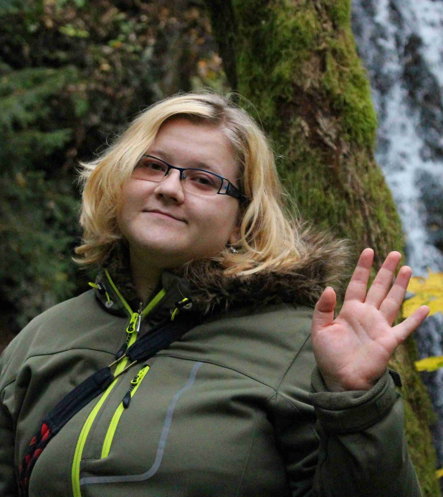Mým skautským domovem je 5. středisko Modřany, jako světluška jsem chodila do 75. oddílu a pak jsem jako skautka přešla ke 162. oddílu. V šestnácti jsem začala pomáhat s vedením světlušek a to mi vydrželo až do mých dvaceti dvou, před rokem jsem totiž poněkud narychlo převzala oddíl vlčat. I tak ale pomáhám, kde to jen jde, ráda jezdím na akce (ať už jako servis nebo účastník) a pomáhám s během střediska. Momentálně studuji na Vysoké odborné škole sociálně právní v oboru Sociální pedagogika. Do budoucna mám velké plány, tak uvidíme, co se mi podaří. ;)
{kind=link}
Jirka Džordž Chuchlík
oddíl Poutníci
Do skautského oddílu Poutníci střediska ICHTHYS Plzeň jsem vstoupil v roce 2005 v šesti letech. V Poutnicích jsem strávil celý svůj skautský život. Přes vlče a skauta jsem se dostal k vedení družiny a k roverství. V oddílu se starám o majetek a příštím rokem bych měl převzít vedení oddílu pokud se vše podaří.
Studuji na církevním gymnáziu v Plzni. Mimo skaut svůj volný čas věnuji sportu jak na profesionální tak na amatérské úrovni (frisbee, triatlon, jednokolka...).
{kind=link}
Vojta Charlie Gerlich
oddíl Pětka
Tahle ryba se jmenuje Charlie. Plave si životem a zrovna opustila bahnité vody střední školy (zatím si
čistí žábry a dělá tempa naprázdno před vyššími proudy). Když se potřebuje nadechnout, zaplave si
do oddílu – nezná lepší způsob obohacení kyslíkem a jinými látkami. V „Pětce“ už je tak dlouho, že se
dostala mezi kapří metuzalémy a už třetím rokem vybírá pro ostatní v hejnu vhodný plankton. Nad
hladinou ji drží dobré čtivo (na vodotěsném papíře, samozřejmě), rybí tanec, sem tam nějaký pohyb
(bruslení na rybolyžích) a pár snů.
{kind=link}
Markéta Dolce Čistecká
oddíl Miriklo
Do skauta jsem začala chodit v roce 2006 a to do 52. střediska Stopaři na Praze 8. Nejdříve jsem navštěvovala světlušky, poté jsem přestoupila do skautek, pak jsem se rok aktivně věnovala roveringu a nyní vedu skautky. V našem středisku také pomáhám s vedením střediskové pokladny. Mimo skauta se věnuji hře na housle, četbě a kreslení.
{kind=link}
Veronika Ptáče Čefelínová
oddíl Děbenky
Na svém druhém táboře, v roce 2008, jsem dostala přezdívku Ptáče. Světlušky mi tak říkají i teď, ale jinak se mi říká Vera.
Teď jsem už čtvrtým rokem vedoucí světlušek v 5. přístavu vodních skautů Praha, z toho jsem rok byla jejich hlavní vedoucí. Kromě vedení světlušek se ještě věnuju našemu okresnímu roverskému kmeni - Roverské Žižkovské Republice, kde jsem momentálně prezidentkou.
S nejlepšími kamarády z oddílu trávím hodně času i mimo skautské akce, nejčastěji na horách, ať už v zimě, nebo v létě. Hory mám ráda i o samotě, mojí láskou jsou Krkonoše a ráda bych se podívala do And nebo do hor v Iránu a Nepálu.
Kromě vymýšlení programu na schůzky a běhání po horách trávím dost času v práci - v divadle. Tahle náhodná brigáda mě nadchla natolik, že bych chtěla studovat produkci na DAMU. Zatím se ale budu vzdělávat na přírodovědecké fakultě, na oboru geografie a kartografie.
{kind=link}
Ota Pokorný
oddíl Veneta
Svou skautskou životní cestu jsem začal ve 180. oddílu Veneta, kde jsem postupně začal pomáhat s vedením a nakonec i vedl družinky našich vlčat a nyní mě čekají i skauti. Skautu se snažím přes rok věnovat tolik času, kolik mi dovolí škola a mé další zájmy (Sokol, Divadlo a další). Nejvíc mě těší, když se mi podaří zkušenosti ze skauta uplatnit i mimo výpravy a další skautské akce a zároveň, když si právě na skautských akcích můžu rozšířit obzory a poznat super lidi. Asi jako každý mám rád pohodu, když si můžu v klidu číst, když se tvoří zážitky z výprav, táborů, prostě dobře stráveného času. Neopovrhnu dobrým filmem, jídlem (hlavně tím z táborové kuchyně) a někdy se i odhodlám zahrát na kytaru.
Doufám, že se nám všem povede kurz úspěšně splnit a celou tu společnou cestu si užít.
Všem zdar, Ota.
{kind=link}
Matěj Korčák
oddíl Pětka
Se skautingem jsem začal asi ve druhé třídě. Nejdřív jsem chodil do Pražské Dvojky, kterou jsem ale při přestupu z vlčat vyměnil za Pětku. Nyní začínám již čtvrtým rokem vést starší kluky a spolu s kamarádem jsme minulý rok převzali vedení oddílu. I mimo skaut trávím rád čas v přírodě, v létě chozením po horách a v zimě na běžkách.
{kind=link}
Pavel Svoboda
oddíl Naděje
Mým prvním kontaktem se skautingem byl příchod na schůzku vlčat ze střediska Ostříž, kam mě 5. 10. 2006 přivedla babička. Od té doby jsem si v tomtéž středisku prošel vlčaty, skauty a teď jsem rover. V pozici oddílového rádce pomáhám se skauty ve 145. oddíle Naděje, mým zaměřením je program, nejradši mám velké složité, strategické hry a připravuji také celotáborovku. Mimo skauting jsem studentem třetího ročníku gymnázia Na Vítězné pláni, jinak rád sportuji-lezu a hraju basket a také programuji.
{kind=link}
Veronika Qiki Nejedlá
středisko Blaník
Moji rodiče mi vybrali jméno Veronika. Nejedlá, moje příjmení moc nevystihuje můj vztah k jídlu a přezdívku Qiki už mám z dětsví. Říkejte mi jak chcete, nic z toho jsem si nevybrala a se vším jsem v pohodě.
Už jsem oslavila ty narozeniny, díky kterým můžete jet do Vegas a pít v Americe. Jinak jsem učitelka ve školce, konkrétně v předškolní třídě, tam už si děti umí i sami dojít na záchod. Miluju svoji práci a baví mě strašně moc dalších věcí. Knihy, umění, filmy, psaní, kreslení a malování, hudba a život, ten mě baví ze všeho nejvíc.
I když už jsem učitelka na plný úvazek, skoro, pořád studuji předškolní a mimoškolní pedagogiku a kdo ví, co bude dál.
Ve skautu jsem už přes půlku svého života. Vyrostla jsem ve středisku Blaník v oddíle Statečných srdcí. Vedla jsem nějakou dobu a momentálně se angažuju ve středisku a na našem střediskovém čekatelském kurzu Řemřich, kde už jsem nějaký ten rok a baví mě to stále víc.
{kind=link}
Kristýna Škarpa Lukešová
odd. světlušek a skautek, středisko Kyje
 Nazdar,
Nazdar,
moje přezdívka je Škarpa, jmenuji se Kristýna Lukešová, je mi 25 let a skautuju neúnavně už od roku 2001.. Vlastně většinu svého života. Začala jsem jako světluška ve středisku v Kyjích, pokračovala jako skautka tamtéž, a teď dělám zástupkyni vedoucí našeho dívčího oddílu. Naše malé středisko mi za tu dlouhou dobu hodně přirostlo k srdci, zní to jako klišé, ale JE to moje druhá rodina. Máme ve středisku jen 3 oddíly a většinu akcí podnikáme společně. Ve středisku se starám hlavně o organizaci a pořádání akcí, jako jsou výlety, výpravy, brigády a různá setkaní nebo závody.
Přeju si, aby v našem oddíle a středisku všechno fungovalo, tak jak má. Chci, abychom dál mohli směrovat životy dětí a mladých lidí správnou cestou. Proto se k Vám hlásím na vůdcák. Taky doufám, že tímto krokem namotivuju i naše ostatní rádce a mladé vedoucí.
Ve svém volném čase se věnuju ze všeho nejraději fotografování a turistice- spíš procházkám v přírodě i ve městě. Ráda cestuju a poznávám nové lidi, od kterých se ráda učím novým věcem, i když jde třeba jen o recept na bramborovou pizzu nebo o něco vážně přínosného. Společně se skautingem se moje koníčky pěkně doplňují a často si je užívám všechny dohromady.
Magdaléna Pacáková
oddíl Argyroneta
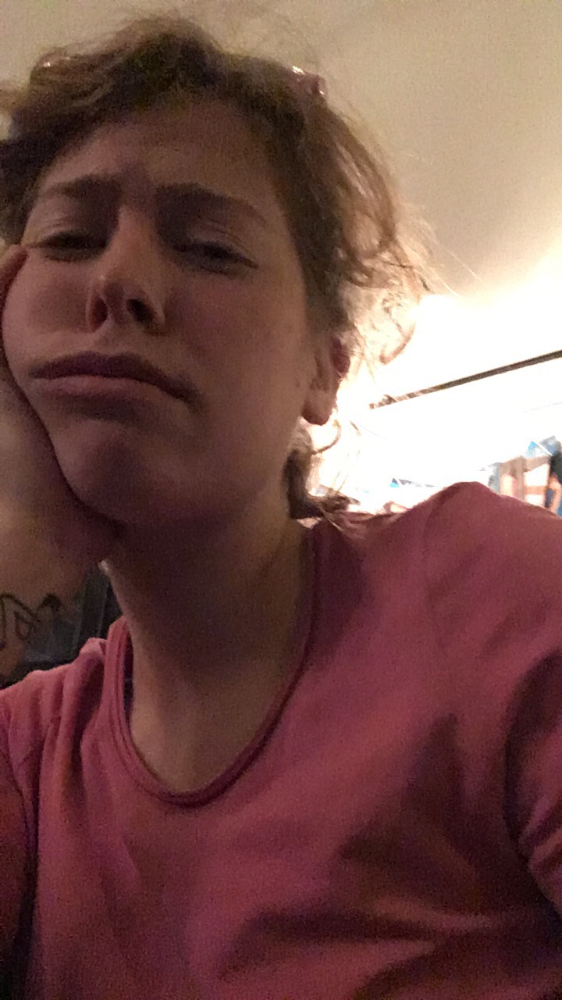Chodim do oddilu od malicka a kazdy tabor me utvrdi v tom, ze chci pokracovat. Rada jim a spim. Tot vse, zdravim, magdalena
{kind=link}
Matouš Štěně Jakubec
oddíl Vatra
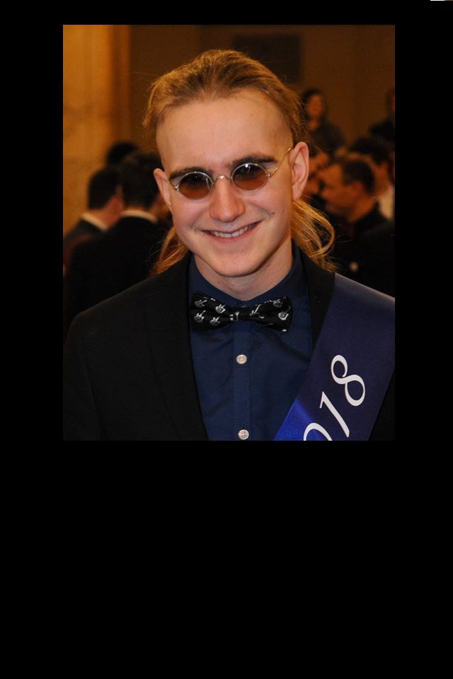Do střediska Oheň ( Praha Horní Počernice) jsem přišel v sedmi letech. Prošel jsem vlčata, skauty, rovery a teď jsem jeden z vedoucích oddílu skautů. Mimo to ve středisku spravuji sklad. Příští rok budu přebírat u nás v oddíle roli hlavního zdravotníka. Kdo ví, co bude poté...no nic. Mimo skaut toho moc nedělám, dá se to shrnout do pár slov. Studuji, muzicíruji, vyrábím/vytvářím, pracuji, jím, spím a jezdím na LARP.
Moc se těším.
Štěně
{kind=link}
Michal Červ Červinka
oddíl Kaktusáci
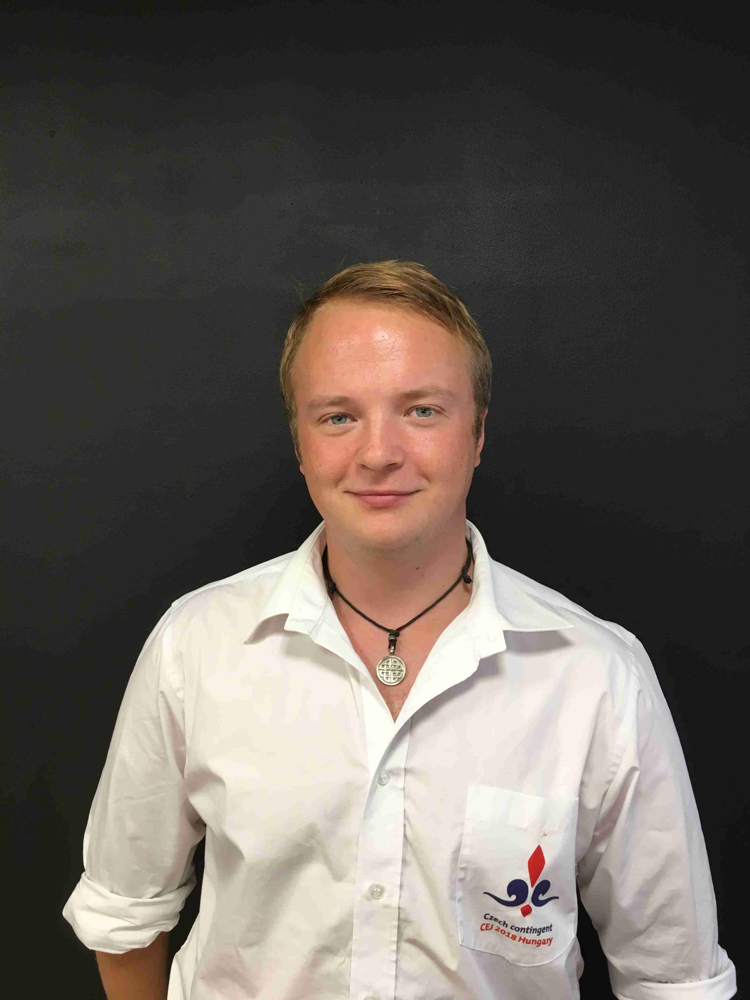Pracuji jako programátor webových aplikací, dále vyvíjím vzdělávací metodiku na programování v Minecraft Education Edition, kterou zároveň lektoruji.
Ve skautu jsem 4. rokem a 3. rokem vedu družinu, teď už Roverů. A od listopadu zakládáme první celostřediskový Roverský kmen, spolu s dalšími dvěmi oddíly v Líbeznicích.
Miluji výzvy a nesnáším, když někdo řekne, že něco nejde. Dále mě baví 3D tisk, kytara, a všechno co se pohybuje rychleji než 40Km/h.
{kind=link}
Anežka Pešicová
oddíl Záře
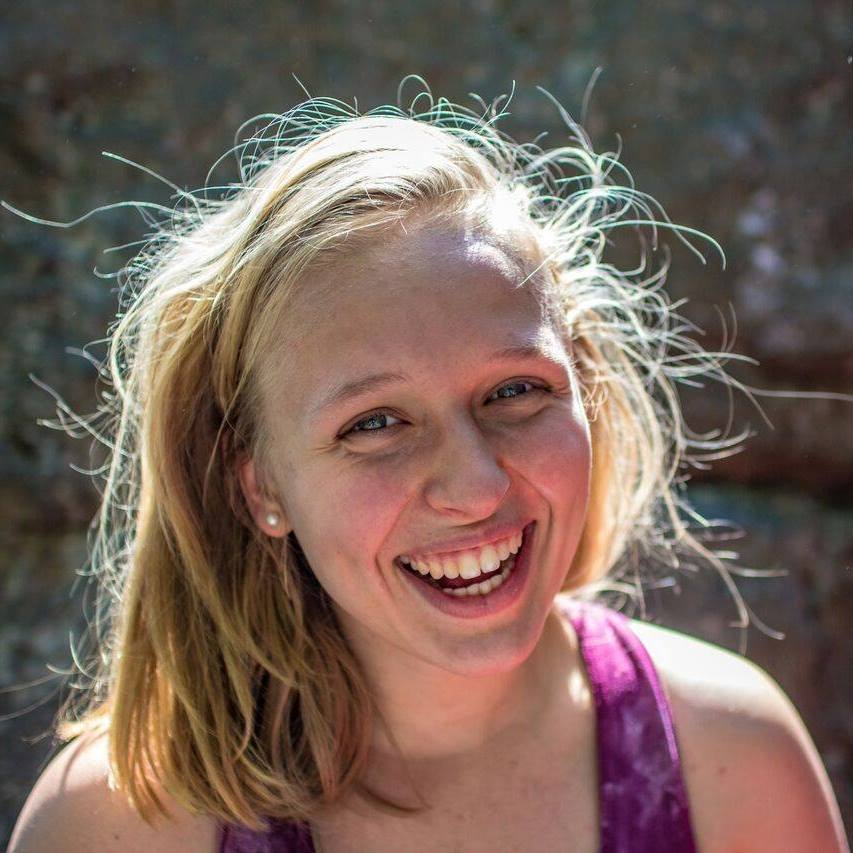Narodila jsem se do skautské rodiny, takže už jako batole jsem jezdila na tábory. Oficiálně jsem do oddílu Záře vstoupila až v roce 2009, což mi bylo 9 let. Pět let, strávených ve světluškách a následně ve skautech, mi uteklo jako voda a než jsem se nadála stála jsem na místě vedoucího. A to mi vydrželo do dnes, kdy jsem hlavním vedoucím skautů.
Letos mám před sebou maturitní rok na bilingvním gymnáziu v Praze a ráda bych pokračovala ve studiu medicíny nebo fyzioterapie. Když náhodou nejsem ve škole, se skauty nebo nespím, tak trénuji děti horolezení a odpočívám jogováním. O víkendech objevuji krásu přírody v sedle kola, lezením po skalách nebo v zimě na běžkách.
{kind=link}
Barbora Šmudla Šefernová
oddíl Záře
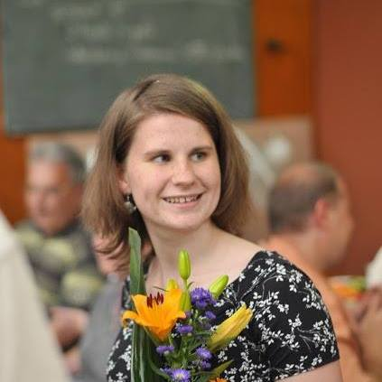Do skautského oddílu Záře jsem začala chodit v roce 2006. Po několika krásných letech plných hraní her, jsem začala vést vlčata a světlušky (v oddíle jim říkáme “vlčušky“). Na vedení mě nejvíc baví sledovat, jak se děti, které přišly do oddílu, neustále mění a rostou.
Ve svém volném čase se kromě skautingu věnuji všem možným druhům sportů, nejradši mám fotbal, v poslední době volejbal, ale také například lezení. Jinak prostě ráda trávím čas venku, což doufám, že budu moci dělat i s blížící se maturitou, která mě čeká tento rok.
{kind=link}
Terezie Macounová
oddíl Lumturo
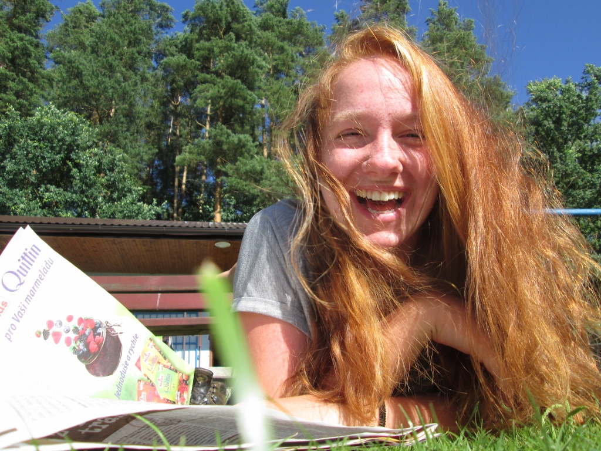Do oddílu Lumturo chodím už dvanáctý rok. Vedu třetím rokem, momentálně světlušky. Letos budu snad maturovat. Pak bych se chtěla dostat na pedagogickou školu . Ráda čtu knížky a peču dorty.
{kind=link}
Lucie Šipka Kohoutová
oddíl Poutníci
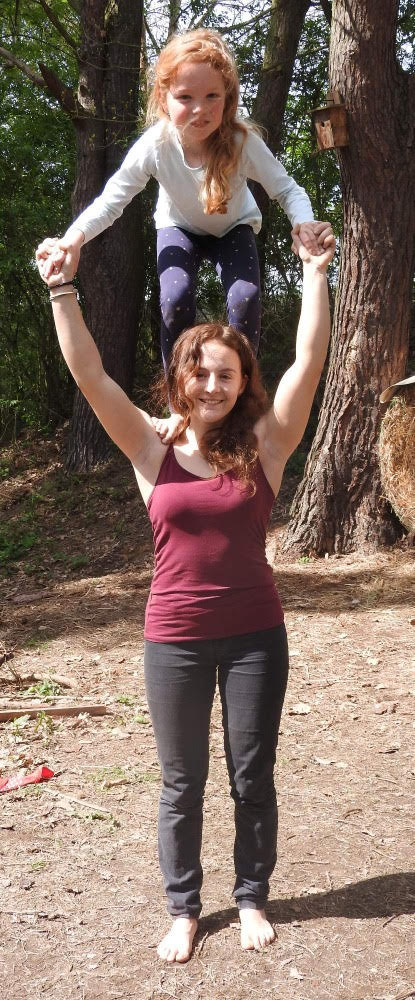Ahoj,
jmenuji se Lucie Kohoutová a je mi 19 let. Do oddílu Poutníci střediska ICHTHYS Plzeň jsem vstoupila v roce 2005 v šesti letech. V tomto oddíle působím i teď. Za těch 13 let jsem se postupně dostala až k vedení družiny. V oddíle mám většinou na starost celooddílové výpravy, ale především svou družinku světlušek, kterou vedu 3 roky. Do budoucna bych v oddíle chtěla působit jako zástupce vedoucího oddílu a pomáhat tak svému dobrému kamarádovi Jiřímu Chuchlíkovi s vedením oddílu.
Studuji na Církevním gymnáziu v Plzni a mimo skaut trávím většinu svého volného na boulderingové stěně (sportovní lezení), kde trénuji jak sebe, tak děti i dospělé.
To je o mně a mém skautském životě ve zkratce asi vše.
{kind=link}
Adam Kulich
oddíl Vatra
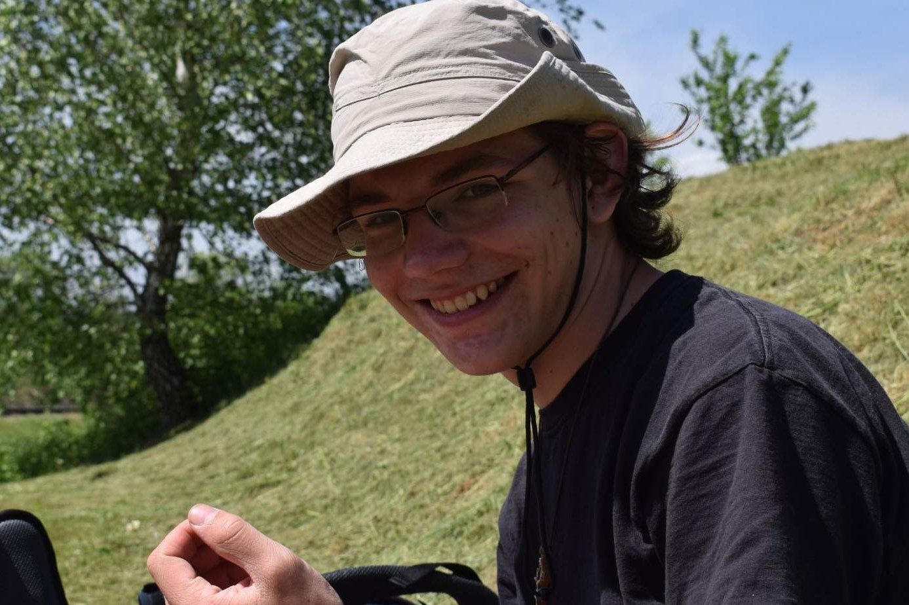Ahojte,
jmenuji se Adam. Do skautu jsem vstoupil, když mi bylo šest a po pár letech u vlčat, skautů a po aktivním roveringu jsem se stal vedoucím ve skautském oddílu Vatra.
Miluju hory, nejvíc ty opuštěné, v létě pěšky, v zimě běžky. Moje srdcovka jsou Karpaty. Věnuju se hudbě, zejména chrámové, hře na varhany a zpěvu. Nyní jsem v maturitním ročníku gymplu a poté směřuji nejspíš na Přírodovědeckou fakultu.
{kind=link}
Karel Karlos Ryšavý
oddíl Záře
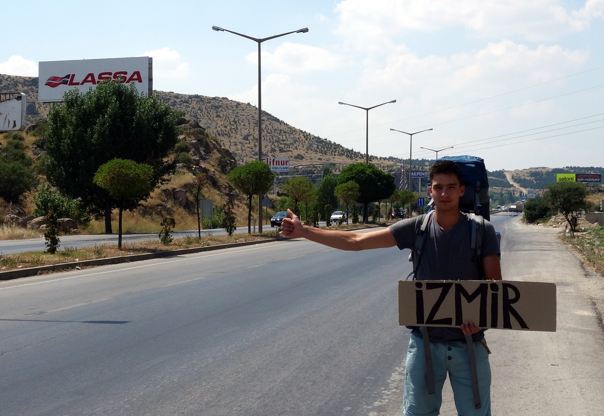Začal jsem chodit do Záře v roce 2004. Rodiče jsou skauti a se sourozencema jsme chodili do skautu taky všichni. Čím víc stárnu, tím víc si uvědomuju, jak jedinečná příprava do reálnýho života skauting je; souhra s přírodou, přirozený fungování ve skupině a drive a odvaha zdolávat nové a nové výzvy – to je set schopností, který díky skautingu mám a nikdy jinde bych ho tak přímočaře nezískal.
Dokončuju bakaláře na ČVUT a budu pokračovat dál v oboru letectví a kosmonautika na FELu. Pak bych chtěl vystudovat diplomatickou akademii a pracovat ve státních službách, nebo v armádě.
Mám rád život se všema jeho nástrahama a výzvama k překonávání, nacházím v tom smysl. Dělám sporty triatlonu, kvůli prioritám a času rekreačně. Zajímá mě biohacking a inovace v medicíně, čemu věnuju část volného času ke škole. Ve zbylé části se realizaju ve stavebních úpravách na chalupě nebo stavím stoly. A abych nezapomněl, cestování; bez toho ani ránu. Nejvíc k srdci mi přirostla Egyptská poušť v těsným závěsu za Izraelí.
{kind=link}
Jan Čeba Čebis
10. oddíl skautů, stř. Kukleny
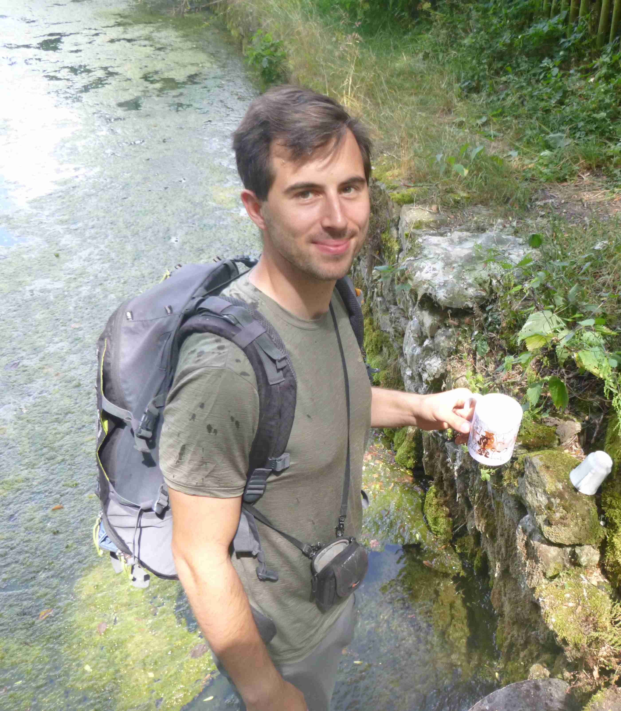Do skautu mě přitáhli kamarádi až v pubertě, ale hned po prvním dni tábora jsem zalitoval, že jsem nemohl to vše zakusit už dříve. V roverech jsem hodně pomáhal u vedení vlčat v našem středisku, po čekatelkách jsem se postupně stal vedoucím 10. oddílu skautů v 4.středisku Kukleny, Hradec Králové. Pro náročnost studia na VŠ jsem vůdcovky odkládal, ale teď při povolání lékaře jsem seznal, že nastal čas to napravit :-) Ve volném čase se vrhám do přírody, ať už s batohem či na kole, nejraději do hor. Věřím, že Ventus bude tou správnou cestou k načerpání nových zkušeností a sil ve skautském životě!
{kind=link}